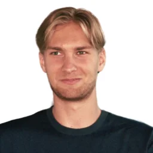

Liv zei het in één zin: "Ik viel in een zwart gat."
Na haar kankerbehandeling was er niets. Geen opvolging, geen plan, geen begeleiding. Het systeem dat haar behandelde, liet haar alleen voor alles wat daarna kwam. Ze moest opnieuw alleen vechten.
Dat was het startpunt van RevOnc.
Yorin De Smet is kinesitherapeut. Na zijn studies aan de UGent en stages in oncologische revalidatie zag hij hetzelfde patroon: patiënten werden ontslagen met een pamflet en aan hun lot overgelaten. Hij besloot te bouwen wat niemand anders bouwde.
RevOnc werd opgericht in 2024 in Gent. Een pilootstudie bij AZorg Aalst met significante resultaten. Steun van VLAIO en Vocatio. Het doel: een wereld waarin iemand als Liv haar leven effectief kan heropbouwen.
